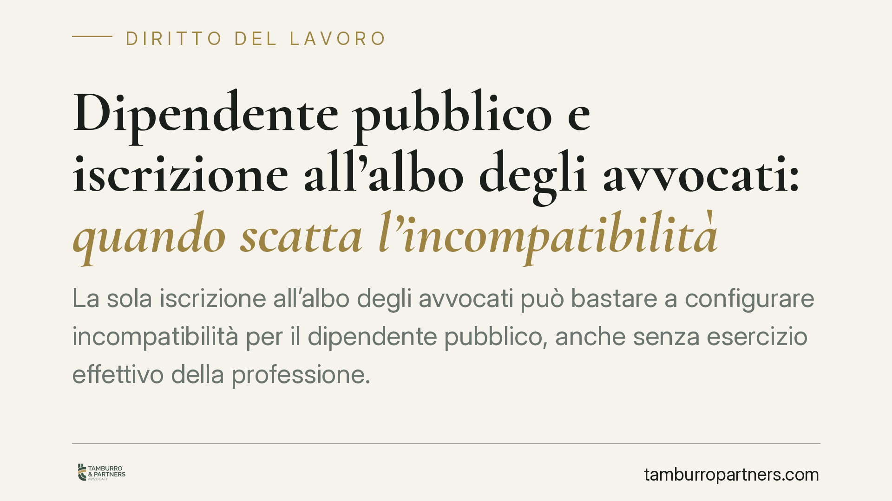

Dipendente pubblico e iscrizione all'albo degli avvocati: quando scatta l'incompatibilità
La sola iscrizione all'albo degli avvocati può bastare a configurare incompatibilità per il dipendente pubblico, anche senza esercizio effettivo della professione. Resta però ferma la necessità di valutare la proporzionalità della sanzione disciplinare, licenziamento compreso. Un tema che tocca migliaia di lavoratori pubblici con una doppia qualifica professionale e impone attenzione prima di iscriversi a un ordine.

Il caso
Un dipendente comunale, pur mantenendo il rapporto di lavoro pubblico, risultava iscritto all'albo degli avvocati. La vicenda ha attraversato i gradi di merito fino a coinvolgere la Corte d'appello di Palermo, con un Comune siciliano e l'Ordine forense come soggetti interessati. Il punto giuridico è netto: la sola iscrizione all'albo, a prescindere dall'esercizio concreto della professione, può integrare una violazione del regime di incompatibilità del pubblico impiego.
> Nota sulla giurisprudenza. La pronuncia di legittimità richiamata dalla fonte (indicata come Cass. n. 6219/2026) non risulta ad oggi verificabile nella sua numerazione e nell'anno. Il principio esposto è coerente con l'orientamento consolidato della Cassazione in materia, ma l'esatto riferimento della sentenza va considerato in attesa di pubblicazione ufficiale e confermato prima di ogni utilizzo. Riportiamo il principio, non la citazione come dato certo.
Inquadramento normativo
Il divieto di svolgere attività incompatibili con l'impiego pubblico ha una base normativa stratificata. Il nucleo storico del principio generale è contenuto negli artt. 60 e seguenti del D.P.R. 10 gennaio 1957, n. 3 (Testo Unico degli impiegati civili dello Stato), che vieta al dipendente l'esercizio di professioni e attività commerciali o industriali non autorizzate.
Questa impostazione è stata poi recepita e aggiornata dall'art. 53 del D.Lgs. 30 marzo 2001, n. 165, che disciplina il regime delle incompatibilità, del cumulo di impieghi e degli incarichi per i dipendenti pubblici, prevedendo autorizzazioni e divieti a tutela dell'esclusività del rapporto.
Sul versante forense, la Legge 31 dicembre 2012, n. 247 detta regole specifiche. L'art. 18 elenca le cause di incompatibilità con l'esercizio della professione di avvocato, tra cui il lavoro subordinato, salvo eccezioni. L'art. 19 disciplina l'iscrizione nell'elenco speciale degli avvocati degli enti pubblici, riservato a chi presti attività esclusivamente nell'interesse dell'ente datore di lavoro. Fuori da questa ipotesi, la posizione del dipendente pubblico iscritto all'albo ordinario è, di regola, incompatibile.
Perché l'iscrizione basta
Il punto decisivo riguarda il piano della valutazione. L'incompatibilità opera su un piano oggettivo: rileva la situazione formale di iscrizione all'albo, non l'uso che il professionista ne fa.
In altri termini, la sussistenza dell'incompatibilità si accerta guardando alla condizione giuridica del soggetto, non alla sua condotta concreta. Non è quindi necessario che il dipendente abbia patrocinato cause, redatto atti o acquisito clientela. L'iscrizione, di per sé, abilita all'esercizio della professione e questo è sufficiente a far sorgere il contrasto con il dovere di esclusività del rapporto di pubblico impiego.
Il filtro della proporzionalità
Accertare l'incompatibilità non equivale ad applicare in automatico la sanzione più grave. Qui si colloca il secondo piano dell'analisi, distinto dal primo.
La sanzione disciplinare, licenziamento incluso, resta soggetta al principio di proporzionalità. Il parametro di riferimento è l'art. 2106 c.c., che impone una graduazione della sanzione rispetto alla gravità dell'infrazione, nonché la disciplina del procedimento disciplinare del pubblico impiego contenuta negli artt. 55 e seguenti del D.Lgs. 165/2001.
La valutazione va condotta caso per caso. Rilevano, tra l'altro, la durata della situazione di incompatibilità, l'eventuale buona fede, l'esistenza o meno di un esercizio effettivo della professione, le circostanze soggettive e il comportamento complessivo del dipendente. Un conto è la sussistenza oggettiva del contrasto; altro conto è stabilire se la risposta sanzionatoria adeguata sia il licenziamento o una misura meno afflittiva.
Implicazioni pratiche
Per il dipendente pubblico la lezione è chiara: la doppia qualifica non è una scelta neutra. Anche un'iscrizione mantenuta per ragioni formali o per non perdere l'anzianità professionale può esporre a contestazioni disciplinari.
Per l'amministrazione, invece, l'accertamento dell'incompatibilità non legittima una reazione standardizzata: ogni sanzione va motivata e calibrata, pena l'illegittimità del provvedimento.
Cosa fare in concreto
- Verifica la tua posizione presso l'ordine forense: controlla se risulti iscritto all'albo ordinario o all'elenco speciale di cui all'art. 19 L. 247/2012.
- Valuta prima di iscriverti: se sei dipendente pubblico, accertati della compatibilità con il tuo inquadramento e richiedi, ove previsto, l'autorizzazione ai sensi dell'art. 53 D.Lgs. 165/2001.
- Regolarizza tempestivamente eventuali posizioni incompatibili, chiedendo la cancellazione o il passaggio all'elenco speciale, documentando le tue scelte.
- Non ignorare una contestazione disciplinare: contesta nel merito anche la proporzionalità della sanzione, non solo la sussistenza dell'addebito.
- Documenta l'assenza di esercizio effettivo e ogni elemento utile a sostenere una graduazione più favorevole della risposta disciplinare.
---
Contributo informativo a cura di Tamburro & Partners Avvocati – Avv. Giuseppe Tamburro. Non costituisce parere legale.
Ogni storia di lavoro ha i suoi tempi.
Se gestisci HR e vuoi un confronto su contenzioso, ispezioni o licenziamenti, scrivi allo studio. Ti rispondiamo entro un giorno lavorativo.